Gotowy program na cały miesiąc, biblioteka 222 ćwiczeń z animacjami 3D i jadłospis przeliczony pod cel użytkowniczki. Osiem języków, bez reklam, subskrypcja po siedmiu dniach próbnych.
Prezentacja dla inwestorów · wrzesień 2026
Rynek i wielkość segmentu: [do uzupełnienia — dane z wybranego raportu]
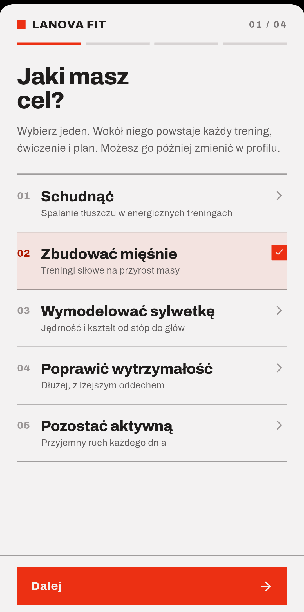
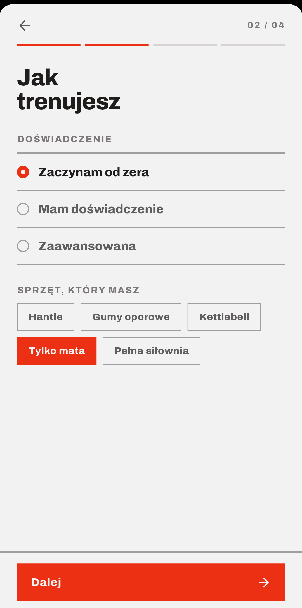
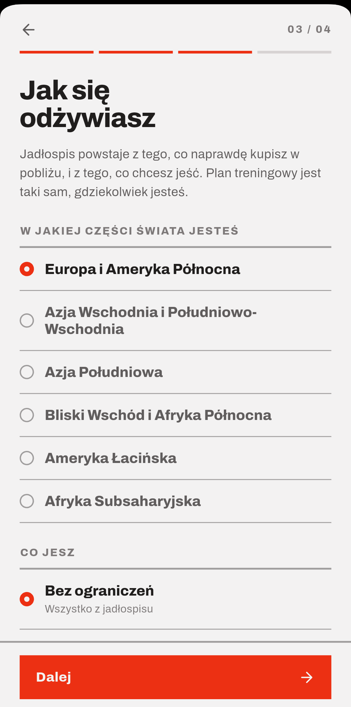
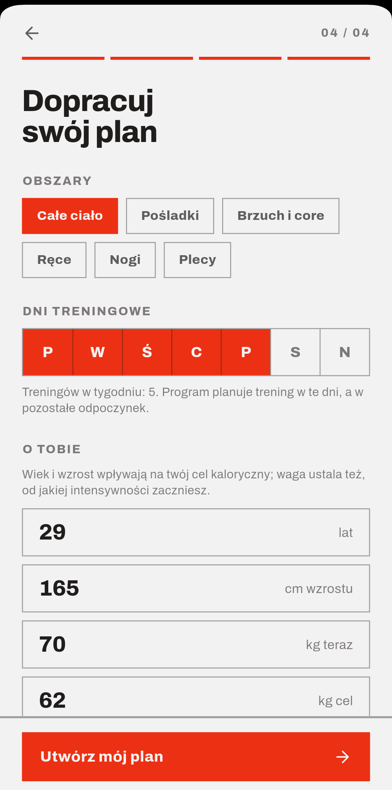
Po onboardingu użytkowniczka ma komplet: program na bieżący miesiąc, jadłospis przeliczony na jej zapotrzebowanie i bibliotekę przefiltrowaną pod jej sprzęt.
Zadeklarowana kontuzja uruchamia osobną, wersjonowaną zgodę — plan powstaje dopiero po jej podpisaniu.
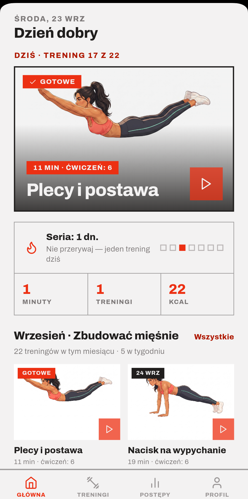
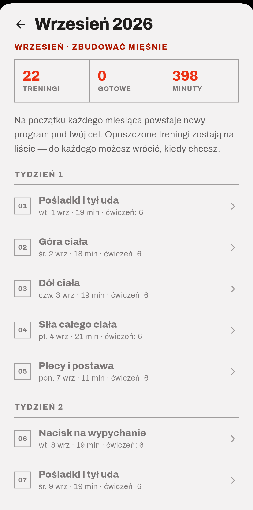
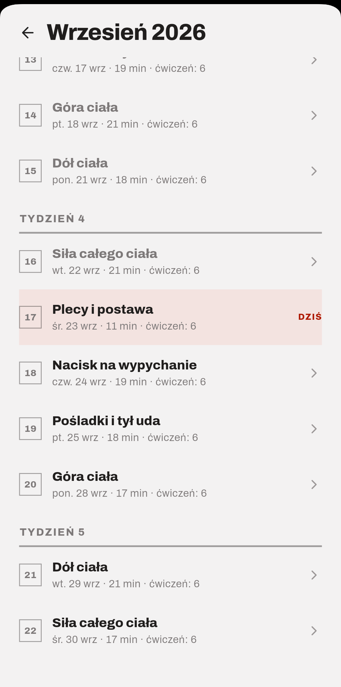
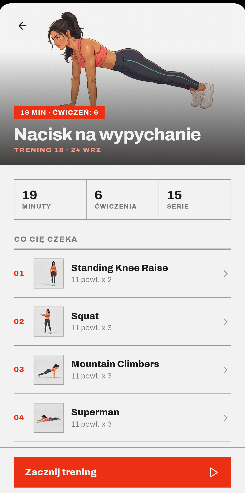
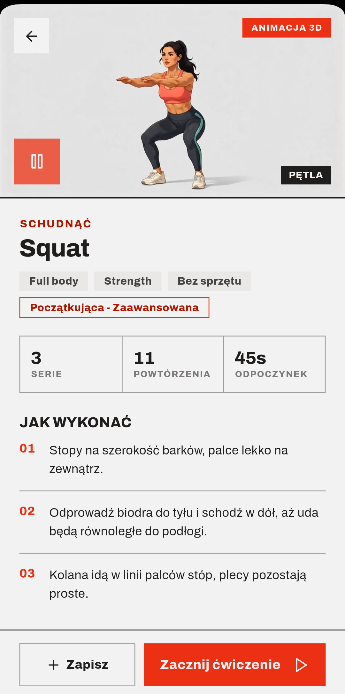
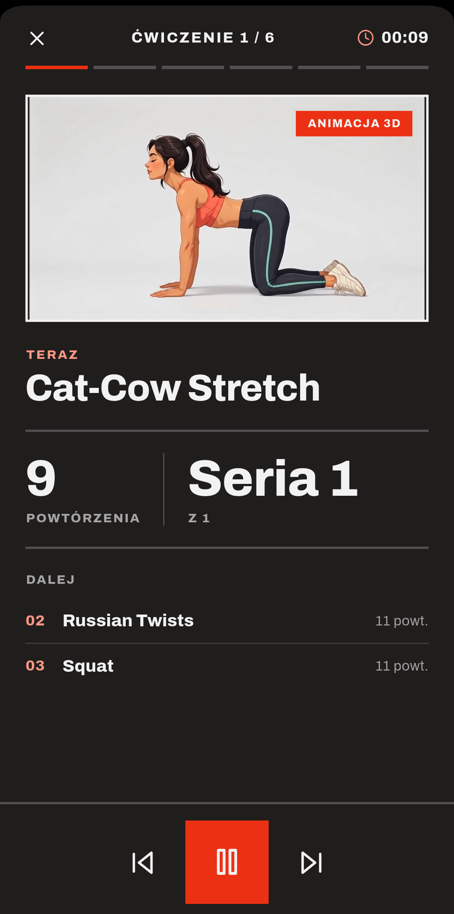
Animacje są własne i spójne: ta sama postać, to samo studio, pętla bez cięcia. Nie są to licencjonowane filmiki z banku wideo.
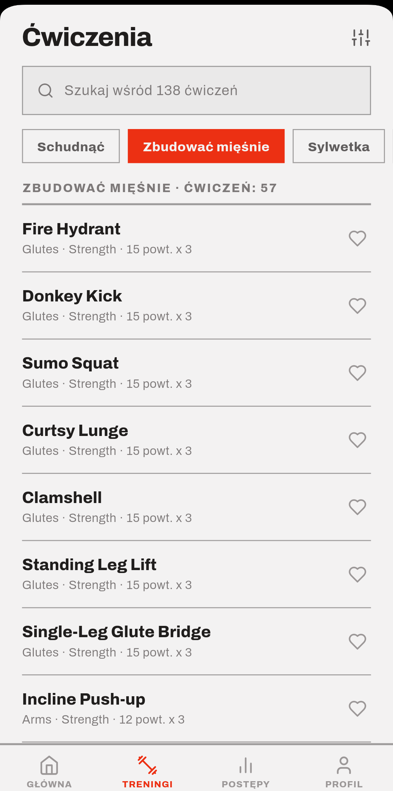
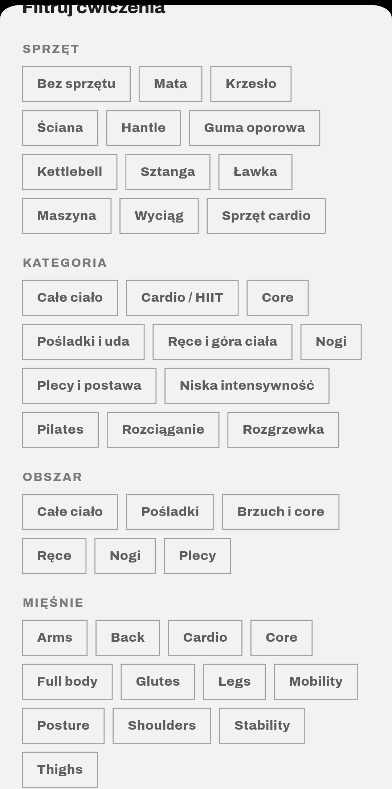
Na zrzucie profil „tylko mata” widzi 138 z 222 ćwiczeń.
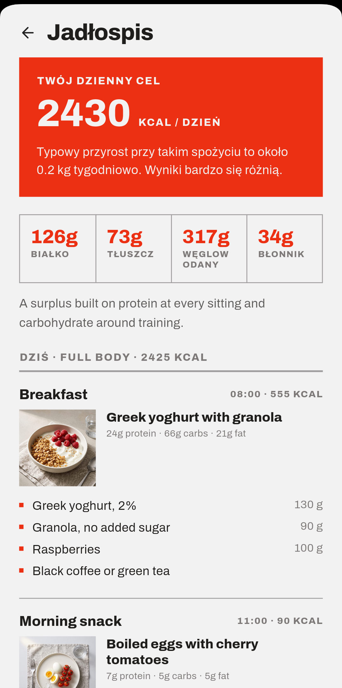
Nazwy dań i przepisy są dziś po angielsku także w wersjach obcojęzycznych; aplikacja informuje o tym w ustawieniach języka. Tłumaczenie treści kulinarnych jest w planie.
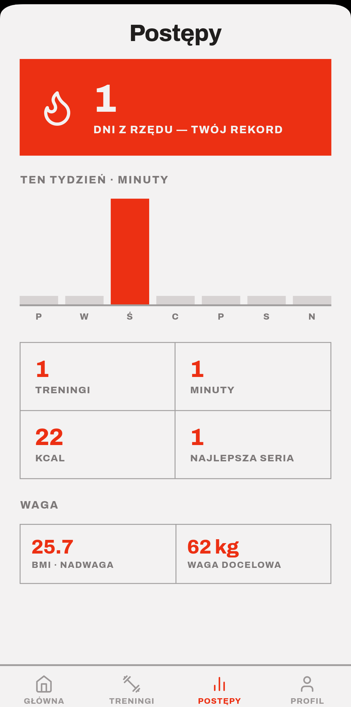
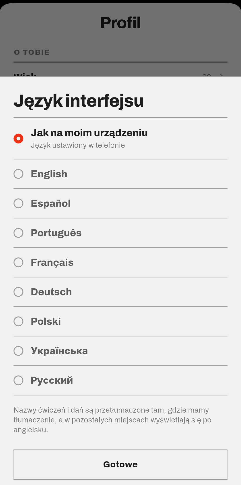
Dane treningowe trzymamy na urządzeniu. Aplikacja nie wymaga zakładania konta.
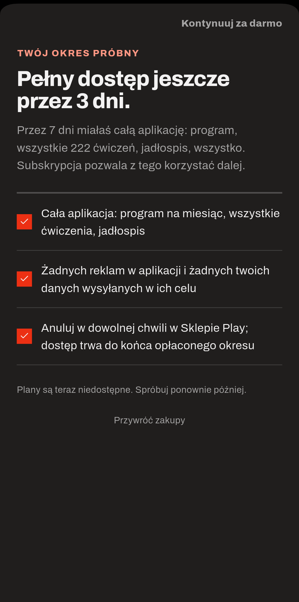
Cennik i plany: [do uzupełnienia — ceny ustalane w Google Play Console]
Na zrzucie plany nie są jeszcze wgrane do Play, dlatego widnieje komunikat o niedostępności.
Koszt pozyskania i prognoza ruchu: [do uzupełnienia]
| Obszar | Stan | Następny krok |
|---|---|---|
| Aplikacja mobilna (Android) | Gotowa funkcjonalnie | Wydanie do Google Play |
| Biblioteka ćwiczeń | 222 ćwiczenia, 60 animacji | Pozostałe 162 animacje |
| Interfejs w 8 językach | Gotowy | Korekta native speakerów |
| Jadłospis | 114 dań, 81 przepisów | Tłumaczenie treści kulinarnych |
| Subskrypcja | Wdrożona w aplikacji | Plany i ceny w Play Console |
| Blog i lądowanie | Gotowe | Publikacja i AdSense na produkcji |
| iOS | Projekt przygotowany | [termin do uzupełnienia] |
Produkt jest zbudowany i działa. Potrzebujemy partnera do premiery: budżetu na pierwsze miesiące dystrybucji, dokończenia biblioteki animacji i wejścia na iOS.
Kwota, struktura rundy i wykorzystanie środków: [do uzupełnienia]
Zespół: [do uzupełnienia]
Lanova Fit · lanovafit.com